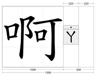
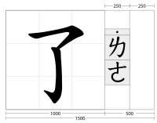
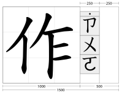

Skip if the text is not vertical.Test passes if the text is vertically set and the tone marks appear in the locations indicated in the images without exceeding the height of the base character.
  
啊˙ㄚ了˙ㄌㄜ作˙ㄗㄨㄜ